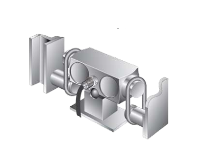
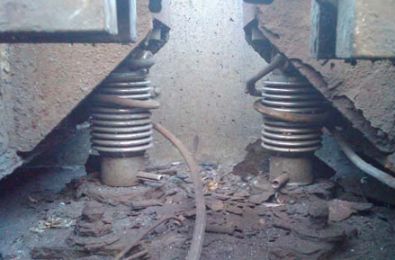
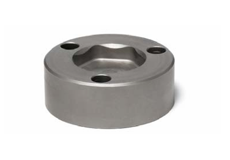

Load Cell Geometry
Terdapat dua geometri dominan untuk sistem Load Cells: Kompresi (vertikal) dan balok geser (horizontal)
Load Cells kompresi (analog dan digital) mengukur beban dengan pengukur regangan pada kolom vertikal yang berjalan melalui bagian tengah Load Cells. Biasanya, Load Cells tersebut digunakan dalam desain "rocker pin", yang memungkinkan jembatan timbang bergerak bebas dalam batasan sistem pemeriksaan. Sistem pemeriksaan tersebut dapat mencakup bumper penyerap guncangan, baut yang dapat disetel, dan batang pemeriksaan. Jika disetel dengan benar, sistem memungkinkan gerakan yang cukup sehingga jembatan timbang dan Load Cells berada pada posisi yang benar. Hal itu mencegah timbangan menempel pada fondasi atau pendekatan. Desain tersebut juga membatasi peluang keausan fisik pada komponen. Desain rocker pin juga harus mencakup fitur anti-rotasi sehingga Load Cells tidak dapat berputar pada posisinya.
Load Cells balok geser ujung ganda ditopang di bagian tengah dan dihubungkan ke jembatan timbang di setiap ujungnya.
Load Cells balok geser dan balok geser ujung ganda (termasuk kantilever) juga menggunakan pengukur regangan, kecuali dipasang pada balok horizontal. Balok geser ujung tunggal dipasang pada satu ujung dan dihubungkan ke jembatan timbang di ujung lainnya. Balok geser ujung ganda biasanya dipasang atau disangga di bagian tengah dan dihubungkan ke jembatan timbang di kedua ujungnya. Apa pun itu, balok tersebut biasanya dihubungkan ke titik pemasangan yang lebih rendah di jembatan timbang, yang menciptakan sistem suspensi. Di sana, jembatan timbang dapat berayun sedikit ke dua arah atau lebih. Sistem itu dirancang agar dapat memusatkan diri sendiri, berkat tarikan gravitasi ke bawah pada ujung balok. Namun, hubungan antara ujung balok dan struktur timbangan harus diperiksa secara berkala untuk mengetahui tanda-tanda keausan.
Jika Load Cells gaya kompresi tidak memiliki fitur anti-rotasi yang memadai, pada akhirnya kabel dapat melilit Load Cells dan putus.
Misalnya, sistem antirotasi METTLER TOLEDO mencakup bentuk heksagonal pada penerima Load Cells yang mencegah Load Cells berputar.